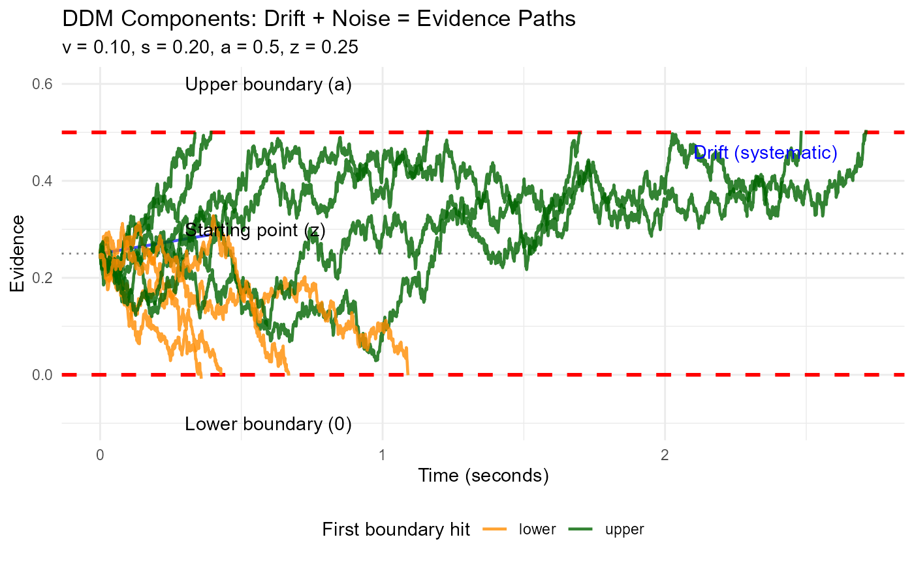
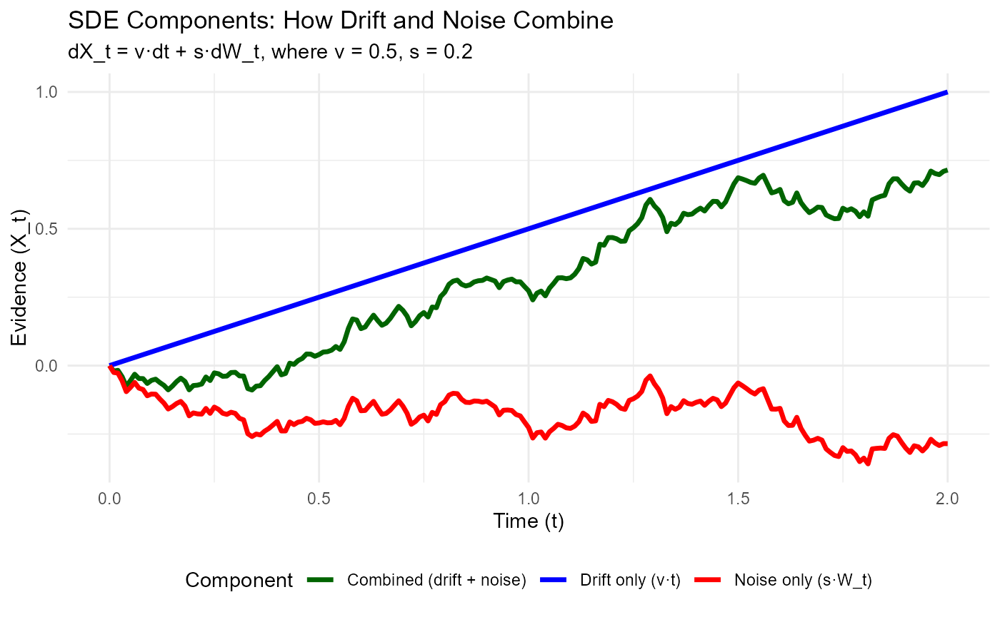
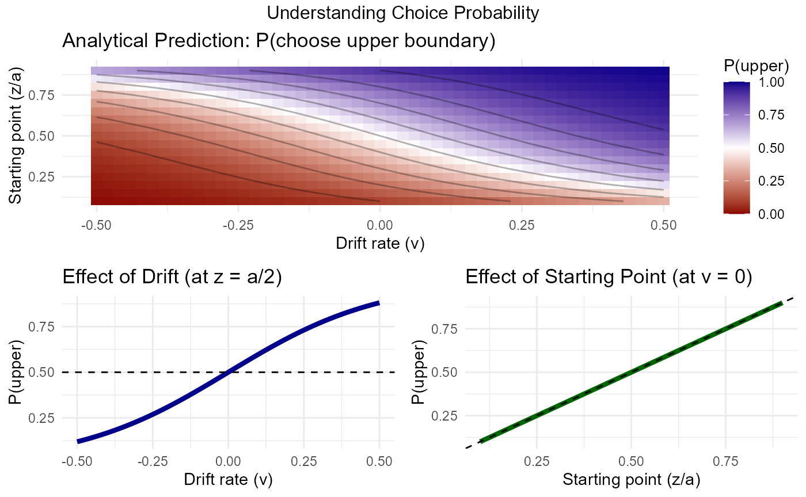
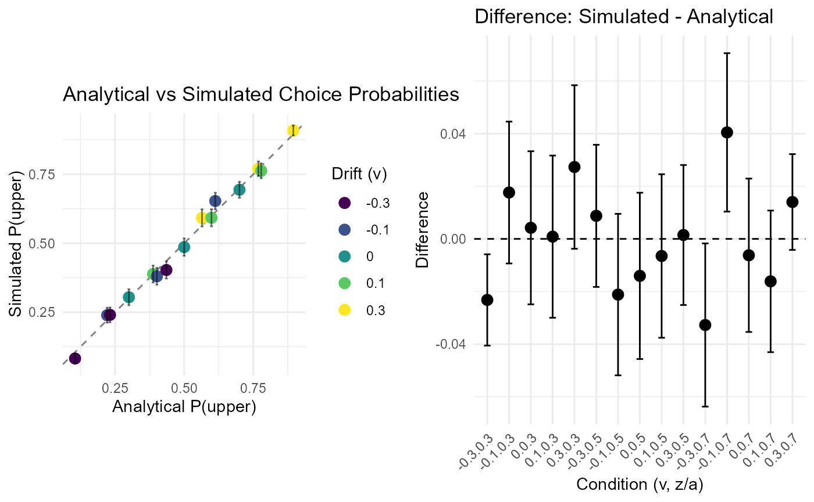

Mathematical Foundations of the DDM
Dogukan Nami Oztas
2025-05-19
05_mathematical_foundations_of_ddm.RmdIntroduction
While our project primarily focuses on understanding the Diffusion Decision Model (DDM) through simulation, it’s important to recognize that the DDM is a formally defined mathematical model. The simulations we perform are essentially numerical approximations of an underlying continuous stochastic process. This vignette provides a brief conceptual overview of these mathematical foundations.
The DDM: A Continuous Process of Evidence Accumulation
At its heart, the DDM describes how evidence () for one of two choices accumulates over time (). This accumulation isn’t perfectly steady; it’s influenced by two main forces:
- A systematic “pull” or “drift”: This is the average direction and speed at which evidence tends to accumulate, represented by the drift rate (). A stronger or clearer stimulus generally leads to a higher magnitude of .
- Random “jiggles” or “noise”: This represents moment-to-moment fluctuations and inconsistencies in the evidence gathering or processing, characterized by a noise standard deviation ().
To describe such a continuous process that changes both systematically and randomly, mathematicians use Stochastic Differential Equations (SDEs).
# Demonstrate with positive drift
demonstrate_ddm_components(v = 0.1, s = 0.2, n_paths = 10)
Understanding “Infinitesimal” and Continuous Change
Before looking at the SDE, let’s understand the concept of “infinitesimal.” Imagine trying to describe a smooth, curved path:
- You could use a few straight line segments connecting distant points. This would be a rough approximation.
- You could use many, many very short line segments. This would look much smoother and closer to the true curve.
“Infinitesimal” takes this idea to the extreme: it refers to changes or intervals that are immeasurably or incalculably small. By considering these infinitely small steps in time () and evidence (), calculus and SDEs can precisely describe processes that unfold continuously and smoothly, even when they involve randomness.
show_discrete_to_continuous()
The DDM as a Stochastic Differential Equation (SDE)
The DDM’s evidence accumulation process is formally expressed by the following SDE:
Let’s break this down:
- (Infinitesimal Time Step): Think of this as an incredibly tiny, almost zero-length, slice of time.
- (Infinitesimal Change in Evidence): This is the tiny change in the accumulated evidence that happens during that infinitesimal time .
-
(The Drift Component):
- is the drift rate.
- This term represents the predictable, average change in evidence due to the quality of the stimulus. If there were no noise, the evidence would change by exactly during the time .
-
(The Noise/Diffusion Component):
- is the noise intensity (standard deviation of the noise process).
- is an infinitesimal increment of a Wiener process (also known as Brownian motion). You can think of as a tiny, random “kick” or “nudge” the evidence receives during . These kicks are drawn from a Normal distribution with a mean of 0 and a variance equal to (so, standard deviation ). The parameter scales the size of these random kicks.
So, the equation means: “In an infinitesimally small moment of time , the tiny change in evidence is the sum of a systematic change due to drift () and a random change due to noise ().”
visualize_sde_components()
explore_choice_probability()
Connecting the SDE to Our Simulations (Euler-Maruyama)
Computers can’t work with true “infinitesimals.” Instead, our
simulation functions (like simulate_diffusion_trial) use a
small, finite time step, which we call dt
in our code (e.g., 0.001 seconds). This method of
approximating an SDE with small, discrete steps is known as the
Euler-Maruyama method.
For each small time step dt in our simulation, the
change in evidence
()
is calculated as:
where: * is our simulation’s time step parameter. * is a random number drawn from a standard Normal distribution (mean 0, standard deviation 1).
This simulated increment
rnorm(1, mean = v_trial * dt, sd = s * sqrt(dt)) directly
implements this Euler-Maruyama step. The smaller we make our simulation
dt, the closer our simulated paths get to the true
continuous process described by the SDE. It’s like using more and more
tiny line segments to draw a smooth curve.
First Passage Times and Choice Probabilities
The core predictions of the DDM concern two main outcomes:
- Choice: Which of the two decision boundaries (e.g., an upper boundary or a lower boundary ) is the accumulating evidence going to hit first?
- Reaction Time (RT): How long does it take for the evidence to reach one of these boundaries? In mathematical terms, this is known as a “first passage time” – the time it takes for the process to first cross a specific threshold.
For the simple DDM, where the parameters
v (drift rate), a (threshold separation),
z (starting point), and s (noise intensity)
are all constant across trials, mathematicians like William Feller have
derived analytical solutions.
What is an Analytical Solution?
An analytical solution is a precise mathematical formula that directly calculates a model’s prediction (like a choice probability or the shape of the RT distribution) from its parameters. This is different from a simulation, which approximates these predictions by running many random trials. Analytical solutions are exact and computationally efficient when available.
These solutions often come from solving the differential equations (like the Kolmogorov equations) associated with the stochastic process defined by the DDM. Feller’s work provided many foundational results for such diffusion processes.
Analytical Solution for Choice Probability
One such key analytical result, derived from the theory of diffusion processes (see Feller, 1968, Vol II, Ch. XIV), gives us the probability that the evidence accumulation process, starting at with boundaries at and , will hit the upper boundary before hitting .
For , this probability is:
And if :
We can implement this formula in R and compare its predictions to
those from our DDM simulator (the version without across-trial
parameter variability, found in
R/02_ddm_simulator_basic.R). This comparison serves as an
important validation of our simulation code.
analytical_p_upper <- function(v, a, z, s) {
if (a <= 0 || z < 0 || z > a || s <= 0) { # Basic validation
warning("Invalid parameters for analytical_p_upper.")
return(NA)
}
if (abs(v) < 1e-9) { # Treat v as effectively zero
return(z / a)
} else {
# Using s directly as in dX = v*dt + s*dW, so s^2 is variance rate parameter
numerator <- 1 - exp(-2 * v * z / (s^2))
denominator <- 1 - exp(-2 * v * a / (s^2))
if (abs(denominator) < 1e-9) { # Avoid division by zero if exp terms are ~1
warning("Denominator close to zero in analytical_p_upper; parameters might be extreme.")
return(NA)
}
return(numerator / denominator)
}
}Comparing Analytical Solution with Simulation
Let’s pick a set of parameters and see how our simulation results for P(choice=1) compare to the analytical solution.
# Parameters for comparison
comp_params_math <- list(
v = 0.1,
a = 0.7,
z = 0.35, # Unbiased start
s = 0.2, # Standard DDM scaling parameter for s
ter = 0, # Not relevant for choice probability, set to 0 for this sim
dt = 0.001
)
n_sim_math_comp <- 2000 # Use a large number of trials for stable estimate
# Analytical Prediction
p_upper_analytical_val <- analytical_p_upper(
v = comp_params_math$v, a = comp_params_math$a,
z = comp_params_math$z, s = comp_params_math$s
)
cat(paste("Analytical P(hit upper boundary 'a'):", round(p_upper_analytical_val, 5)), "\n")## Analytical P(hit upper boundary 'a'): 0.85195
# Simulation (using simulate_diffusion_experiment from 02_ddm_simulator_basic.R)
set.seed(2024)
sim_data_math_comp <- simulate_diffusion_experiment(
n_trials = n_sim_math_comp,
v = comp_params_math$v,
a = comp_params_math$a,
z = comp_params_math$z,
s = comp_params_math$s,
ter = comp_params_math$ter,
dt = comp_params_math$dt
)
p_upper_simulated_val <- mean(sim_data_math_comp$choice == 1, na.rm = TRUE)
cat(paste("Simulated P(hit upper boundary 'a') from", n_sim_math_comp, "trials:", round(p_upper_simulated_val, 5)), "\n")## Simulated P(hit upper boundary 'a') from 2000 trials: 0.85179
cat(paste("Absolute difference:", round(abs(p_upper_analytical_val - p_upper_simulated_val), 5)), "\n")## Absolute difference: 0.00016
# Comprehensive comparison of analytical vs simulated
verify_analytical_solution <- function(n_sims = 1000) {
# Test parameters
test_params <- expand.grid(
v = c(-0.3, -0.1, 0, 0.1, 0.3),
z_ratio = c(0.3, 0.5, 0.7)
)
test_params$a <- 1.0
test_params$z <- test_params$z_ratio * test_params$a
test_params$s <- 0.5
results <- data.frame()
for (i in 1:nrow(test_params)) {
params <- test_params[i,]
# Analytical prediction
p_analytical <- analytical_p_upper(params$v, params$a, params$z, params$s)
# Simulation
sim_data <- simulate_diffusion_experiment(
n_trials = n_sims,
v = params$v,
a = params$a,
z = params$z,
s = params$s,
ter = 0,
dt = 0.001,
verbose = FALSE
)
p_simulated <- mean(sim_data$choice == 1, na.rm = TRUE)
se_simulated <- sqrt(p_simulated * (1 - p_simulated) / n_sims)
results <- rbind(results, data.frame(
v = params$v,
z_ratio = params$z_ratio,
p_analytical = p_analytical,
p_simulated = p_simulated,
se_simulated = se_simulated,
difference = p_simulated - p_analytical
))
}
# Visualization
p1 <- ggplot(results, aes(x = p_analytical, y = p_simulated)) +
geom_abline(slope = 1, intercept = 0, linetype = "dashed", color = "gray50") +
geom_point(aes(color = factor(v)), size = 3) +
geom_errorbar(aes(ymin = p_simulated - 2*se_simulated,
ymax = p_simulated + 2*se_simulated),
width = 0.01, alpha = 0.5) +
scale_color_viridis_d(name = "Drift (v)") +
labs(title = "Analytical vs Simulated Choice Probabilities",
x = "Analytical P(upper)",
y = "Simulated P(upper)") +
coord_equal() +
theme_minimal()
p2 <- ggplot(results, aes(x = interaction(v, z_ratio), y = difference)) +
geom_hline(yintercept = 0, linetype = "dashed") +
geom_point(size = 3) +
geom_errorbar(aes(ymin = difference - 2*se_simulated,
ymax = difference + 2*se_simulated),
width = 0.3) +
labs(title = "Difference: Simulated - Analytical",
x = "Condition (v, z/a)",
y = "Difference") +
theme_minimal() +
theme(axis.text.x = element_text(angle = 45, hjust = 1))
gridExtra::grid.arrange(p1, p2, ncol = 2)
cat("Summary Statistics:\n")
cat(sprintf("Mean absolute difference: %.5f\n", mean(abs(results$difference))))
cat(sprintf("Max absolute difference: %.5f\n", max(abs(results$difference))))
cat(sprintf("All differences within 2 SE: %s\n",
all(abs(results$difference) < 2*results$se_simulated)))
}
verify_analytical_solution(n_sims = 1000)
## Summary Statistics:
## Mean absolute difference: 0.01565
## Max absolute difference: 0.04048
## All differences within 2 SE: FALSEObservation: The simulated proportion of choices for the
upper boundary should be very close to the analytically derived
probability. Any small difference is due to the stochastic nature of the
simulation and the finite number of trials. Increasing
n_sim_math_comp would typically reduce this difference.
This comparison provides a good validation for our basic DDM simulation
logic.
Analytical Solutions for RT Distributions
Analytical solutions also exist for the entire distribution of first passage times (RTs) for the simple DDM. These are often expressed as an infinite sum of terms involving exponential and trigonometric functions (e.g., see Ratcliff, 1978, Appendix; Feller, 1968; Cox & Miller, 1965).
For example, the probability density function for hitting the upper boundary at time , starting at , given (where is the noise SD parameter as in ) can be written as (e.g., Navarro & Fuss, 2009, adapting Feller):
Implementing and accurately evaluating such infinite series can be numerically challenging (requiring careful truncation of the series and handling of potential underflow/overflow). This is one reason why direct simulation is often a practical and powerful approach, especially when across-trial parameter variabilities are introduced, as these often render analytical solutions intractable.
Why Simulation is Powerful
-
Complexity: When across-trial variabilities
(
sv,sz,st0) are added to the DDM, or if more complex model features (e.g., collapsing boundaries, urgency signals, inter-trial dependencies) are included, deriving full analytical solutions for choice probabilities and RT distributions becomes extremely difficult or practically impossible. - Flexibility: Simulation allows us to explore these complex models by directly implementing the proposed generative process, step by step.
- Intuition: Simulating individual trials (as demonstrated with path visualizations in other vignettes) provides strong intuition about how the model behaves under different parameter configurations.
Our project leverages this power of simulation to understand the DDM, including its more complex variants with parameter variability, which are essential for modeling real-world behavioral data.
Conclusion
The Diffusion Decision Model is grounded in well-defined mathematics, typically expressed as a stochastic differential equation that describes the noisy accumulation of evidence. For simpler versions of the model (without across-trial parameter variability), analytical solutions for key predictions like choice probabilities and RT distributions can be derived.
Our simulation approach, based on the Euler-Maruyama method, provides a numerical approximation to this underlying continuous process. The close match we observed between our basic simulator’s output for choice probability and the established analytical prediction serves as a good validation of our core simulation logic.
For more complex and realistic DDM variants, especially those incorporating across-trial parameter variability, direct analytical solutions are often not available. This highlights the crucial and indispensable role of computational simulation methods in exploring, understanding, and applying these richer models to cognitive phenomena.